这一课和前面四课都不同：题目不给你一句陈述，而是给你一条指令 —— Ask him if it is a good idea to…。你要把它变成一句真正说给对方听的话。所以这里有两个动作叠在一起：先换人称（him → you、his → your、your → me），再换语序（陈述句 → 问句）。30 道题里有 if 型 14 道、疑问词型 16 道，两种问法的造法不一样；还有几道句子里藏着第二个从句，语序最容易崩。
课本 p.110–117
30 个指令 + 1 个例题
人称转换 + 语序
01先把造问句的骨架搭好
看到 Ask him…，不要直接翻译。四步走，前两步最容易漏。
第一步：换人称 — him / he 变 you，your 变 myAsk him if he remembers… → Do you remember…?；go along with you → with me。
第二步：判断类型 — 有没有 if有 if → 造是非问句（Yes/No）；有 what / why / how / which → 造疑问词问句。
第三步：换语序 — 陈述变疑问it is a good idea → Is it a good idea…?；he came → did you come…?
第四步：检查时态 — 原指令用什么时态，问句就用什么he got injured → How did you get injured?（did + 原形）
最省力的判断：看 Ask him 后面第一个词。 是 if → 答案只能是 Yes / No，问句开头是助动词或 be 动词。
是 what / why / how / which / how many → 问句以这个疑问词开头，后面接助动词 + you。
先认这一个词，剩下的都是机械操作。
Ask him if he can ride a motorcycle. → Can you ride a motorcycle?
Ask him what…
5、6、8、11、12、14、 20、25
疑问词 + 助动词 + you，动词还原
Ask him what his major was. → What was your major?
Ask him why / how / which…
7、9、21、22、27、29
同上，只是疑问词不同
Ask him how he got injured. → How did you get injured?
「Ask him if…」后面的句子已经是陈述语序，这一步最容易让人误以为不用改。 指令：Ask him if it is a good idea.（it is —— 陈述语序）
问句：Is it a good idea?（Is it —— 倒装）
指令里的语序是为了嵌在 ask him if 后面才倒过来的，直接念出来就错了。这和汉字「你是不是」的直觉不同，要刻意换。
B · 人称转换表：这一课最密集的错误点
30 道题里有 11 道涉及人称转换，其中 3 道还要把 you 变成 me。这一步漏掉，句子语法全对但意思全错。
指令里的
问句里变成
本课例子
he / him
you
Ask him if he is tired. → Are you tired?
his
your
Ask him what his major was. → What was your major?
himself
yourself
（本课没出现，但同理）Did you hurt yourself?
you（指令里的说话人）
me
Ask him if he can go along with you. → …with me?
our
our（不变）
Ask him if he has ideas to educate our children.（两人共同的）
第 10、16、17 题有个反转陷阱。
这三题的指令里出现了两个 you，但意思完全不同：
Ask him if he can go along with you —— 这里的 you 是说话人，问句里要变 me。
Can you go along with me to the department store? 而 he 变 you（听话人）。一个句子里同时有人称进和人称出，想清楚再开口。
What do you think is the best way…? 不是 What do you think is it…
23
if he is sure he will get… 两个完整句子嵌套
Are you sure you'll get a pay raise? 只倒装第一个，第二个照陈述
26
what a fortune teller says
Do you ever believe what a fortune teller says? says 不倒装，也不加 does
19
whenever he sees one
Do you give money to a beggar whenever you see one? whenever 引导的从句不倒装
一条总规则：do you think 后面接陈述语序。
这条规律在第 7 课和第 21 课都出现过，这一课又撞上三次。记住一句话就够：
What do you think is the best way? —— think 后面不再是问句，所以不倒装。
03课本例题：一句话，只换人称和语序
例题的指令是 Ask him why he lives in the big city.，课本给的问句是 Why do you live in the big city? —— 只做了两件事：he → you，然后把 lives 拆成 do you live。
Example
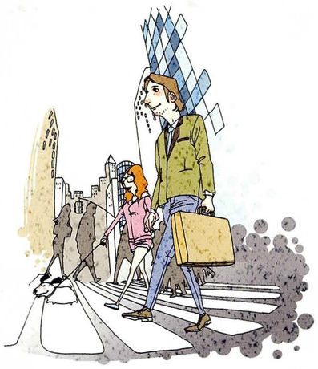
Ask him why he lives in the big city. /ˈsɪti/
The instructionAsk him why he lives in the big city.
What to ask about有 why → 疑问词问句。he 变 you；lives（三单）要拆成 do you live。
Questions you can ask①Why do you live in the big city? ②Why did you decide to live here? ③What keeps you in the city?
注意 lives → do you live 这一步丢掉了什么。
原句的 lives 里同时藏着「第三人称」和「现在时」两个信息。变成问句后，这两个信息都转移到了 do 上，所以 live 必须退回原形。
这是全书反复出现的同一个动作（第 17、18、21 课都有），到这一课应该已经变成条件反射。
别说 Ask him why does he live in the big city。
指令里的 why he lives 已经是陈述语序。要变成问句时，是把 lives 拆开，不是再加一个 does：
✓ Why do you live in the big city? ✗ Why does he lives…?（而且人称也没换）
04三十个指令：怎么问出好问题
每张卡三段：The instruction 课本原指令，What to ask about 说清是 if 型还是疑问词型、人称怎么换，Questions you can ask 给三个问句 —— 第一个是最直接的，后两个是更自然的说法。
01
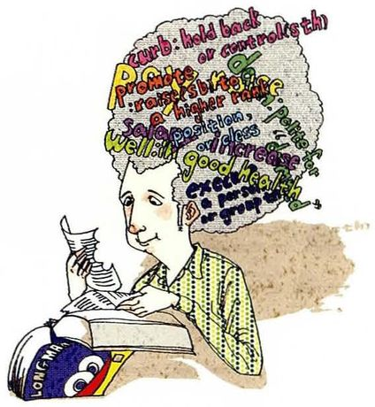
Ask him if it is a good idea to try to memorize the dictionary.
The instructionAsk him if it is a good idea to try to memorize the dictionary.
What to ask aboutif 型 → 是非问句。it is 倒装成 is it。这里没有人称要换（it 指那件事）。
Questions you can ask①Is it a good idea to try to memorize the dictionary? ②Do you think it's worth memorizing a dictionary? ③Have you ever tried memorizing one?
02
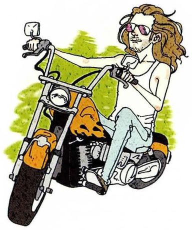
Ask him if he can ride a motorcycle.
The instructionAsk him if he can ride a motorcycle.
What to ask aboutif 型，有 can → 把 can 提到主语前。he 变 you。
Questions you can ask①Can you ride a motorcycle? ②Do you know how to ride one? ③When did you learn?
03
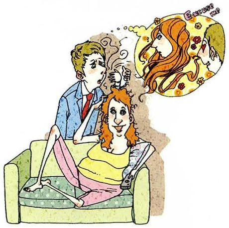
Ask him if he remembers the day he first met his wife.
The instructionAsk him if he remembers the day he first met his wife.
What to ask aboutif 型，一般现在时 → do。两个 his 都要换成 your：your wife。后半句 he first met 也要换成 you first met。
Questions you can ask①Do you remember the day you first met your wife? ②Do you remember where you met her? ③What was she wearing?
04
Ask him if he is tired.
The instructionAsk him if he is tired.
What to ask aboutif 型，有 be 动词 → are 提到主语前（因为主语变成 you）。这是 30 题里最短的一道。
Questions you can ask①Are you tired? ②Are you tired after all that? ③Do you want to take a break?
05
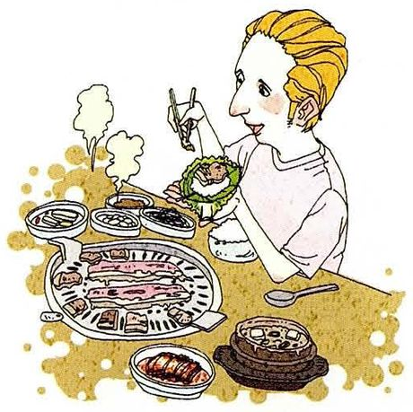
Ask him what he thinks about Thai food.
The instructionAsk him what he thinks about Thai food.
What to ask about疑问词型。he thinks 是陈述语序 → 变成 do you think。about 后面不倒装。
Questions you can ask①What do you think about Thai food? ②How do you like Thai food? ③Have you had much Thai food?
06
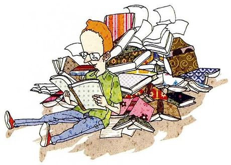
Ask him what his major was.
The instructionAsk him what his major was.
What to ask about疑问词型，过去时 was → was your…。his 变 your，was 不变（主语还是单数）。
Questions you can ask①What was your major? ②What did you study? ③Why did you choose it?
07
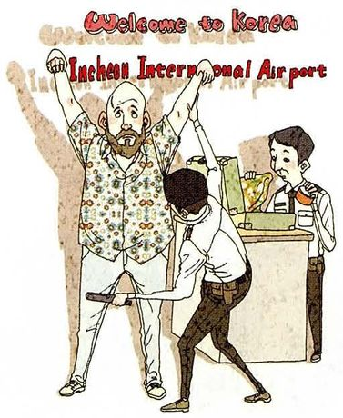
Ask him why he came to Korea.
The instructionAsk him why he came to Korea.
What to ask about疑问词型，came 过去时 → did you come，动词还原。
Questions you can ask①Why did you come to Korea? ②What brought you here? ③How long have you been here?
08
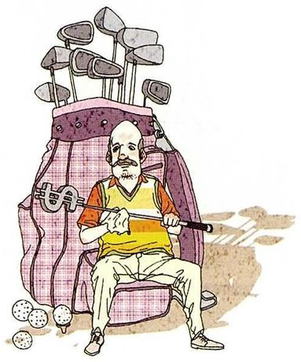
Ask him what brand of golf clubs he uses.
The instructionAsk him what brand of golf clubs he uses.
What to ask about疑问词型，he uses（三单现在）→ do you use，uses 还原成 use。
Questions you can ask①What brand of golf clubs do you use? ②How often do you play golf? ③Who do you usually play with?
09
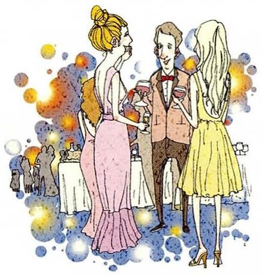
Ask him how the party was last night.
The instructionAsk him how the party was last night.
What to ask about疑问词型，was 过去时 → how was。这里主语是 the party，本来就该倒装，不用换人称。
Questions you can ask①How was the party last night? ②How did it go? ③Who was there?
10
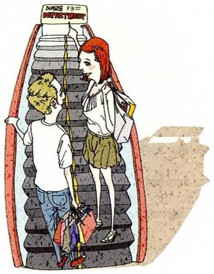
Ask him if he can go along with you to the department store.
The instructionAsk him if he can go along with you to the department store.
What to ask aboutif 型，有 can → 提到主语前。两个人称都要换：he → you，you → me。
Questions you can ask①Can you go along with me to the department store? ②Could you come to the department store with me? ③Are you free this afternoon?
11
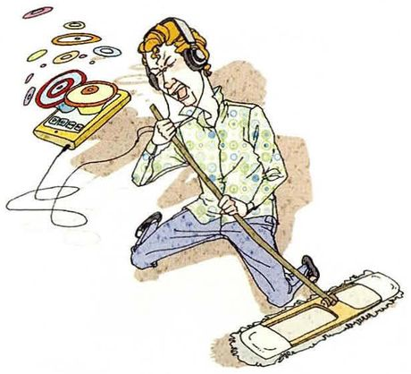
Ask him what kind of music he likes.
The instructionAsk him what kind of music he likes.
What to ask about疑问词型，he likes → do you like。
Questions you can ask①What kind of music do you like? ②What are you listening to these days? ③Do you play anything yourself?
12
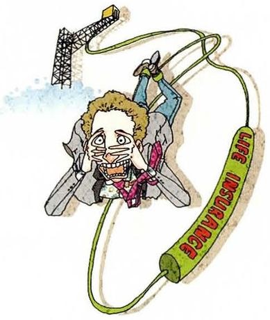
Ask him what he thinks about buying life insurance.
The instructionAsk him what he thinks about buying life insurance.
What to ask about课本脚注：life insurance = 寿险（死后给家人赔付的保险）。疑问词型，he thinks → do you think。
Questions you can ask①What do you think about buying life insurance? ②Do you have life insurance? ③Is it worth it at our age?
13
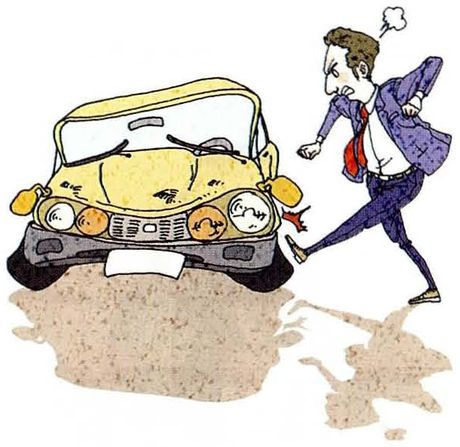
Ask him if he wants to buy a new car.
The instructionAsk him if he wants to buy a new car.
What to ask aboutif 型，he wants（三单）→ do you want，wants 还原成 want。
Questions you can ask①Do you want to buy a new car? ②Are you thinking of buying one? ③What's wrong with the old one?
14
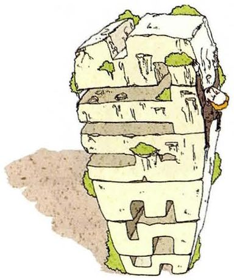
Ask him what the best way is of avoiding stress.
The instructionAsk him what the best way is of avoiding stress.
What to ask about疑问词型，但这一题的语序最容易错：what the best way is → what is the best way。is 要提前。
Questions you can ask①What's the best way of avoiding stress? ②How do you deal with stress? ③What do you do when it gets too much?
15
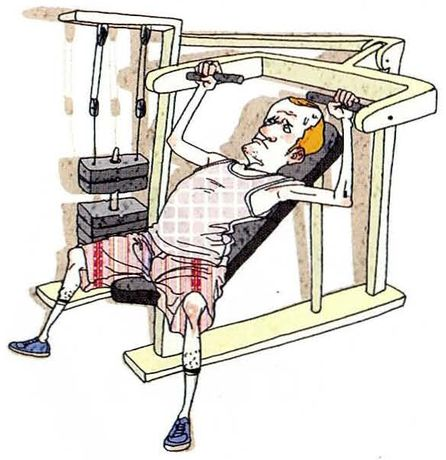
Ask him if he knows the best way to stay healthy.
The instructionAsk him if he knows the best way to stay healthy.
What to ask aboutif 型，he knows → do you know。注意：know 后面接的是名词短语，不倒装。
Questions you can ask①Do you know the best way to stay healthy? ②What do you do to stay healthy? ③How often do you exercise?
16
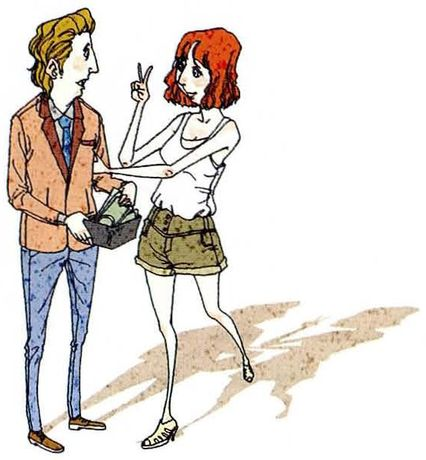
Ask him if he can afford to lend you some money.
The instructionAsk him if he can afford to lend you some money.
What to ask aboutif 型，can 提前。he → you；lend you 里的 you 指说话人 → 变 me。
Questions you can ask①Can you afford to lend me some money? ②Could you lend me a bit until Friday? ③Is now a bad time?
17
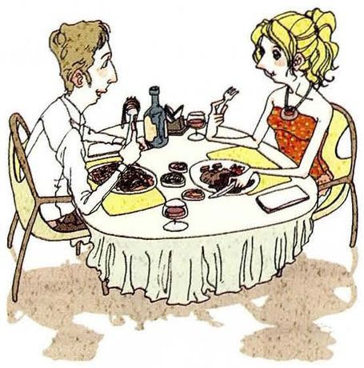
Ask him if he can have dinner with you tonight.
The instructionAsk him if he can have dinner with you tonight.
What to ask aboutif 型，can 提前。he → you，with you → with me。
Questions you can ask①Can you have dinner with me tonight? ②Are you free for dinner tonight? ③Would you like to join me?
18
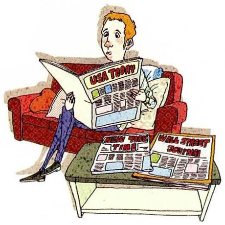
Ask him if he reads a newspaper every day.
The instructionAsk him if he reads a newspaper every day.
What to ask aboutif 型，he reads → do you read。习惯类问题，一般现在时。
Questions you can ask①Do you read a newspaper every day? ②Do you read the news online? ③What do you usually read?
19
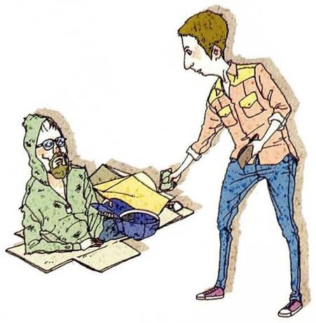
Ask him if he gives money to a beggar whenever he sees one.
The instructionAsk him if he gives money to a beggar whenever he sees one.
What to ask aboutif 型，从句里有 whenever he sees。只倒装主句，whenever 从句保持陈述语序。
Questions you can ask①Do you give money to a beggar whenever you see one? ②Do you usually give them anything? ③Why do you give, or why don't you?
20
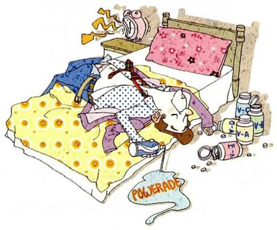
Ask him what he does when he is tired.
The instructionAsk him what he does when he is tired.
What to ask about疑问词型，he does → do you do。两个 he 都要换：what do you do when you are tired。
Questions you can ask①What do you do when you're tired? ②What do you do to recover? ③Do you sleep, or does it not help?
21
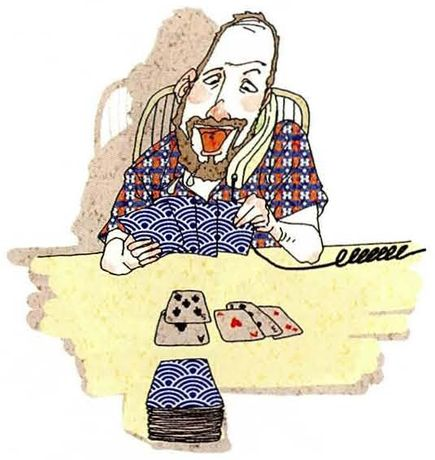
Ask him which he likes better, playing cards or just talking.
The instructionAsk him which he likes better, playing cards or just talking.
What to ask about疑问词型（which），he likes → do you like。which 后面紧跟 do you like，两个选项放句尾。
Questions you can ask①Which do you like better, playing cards or just talking? ②Which would you rather do? ③Do you play cards much?
22
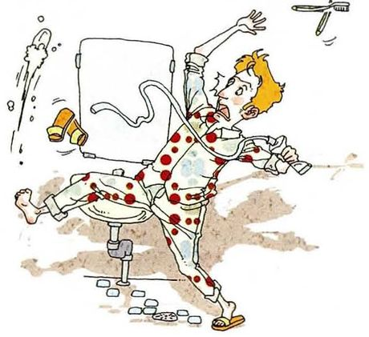
Ask him how he got injured.
The instructionAsk him how he got injured.
What to ask about疑问词型，got 过去时 → how did you get，got 还原成 get。
Questions you can ask①How did you get injured? ②What happened to you? ③How long will it take to heal?
23
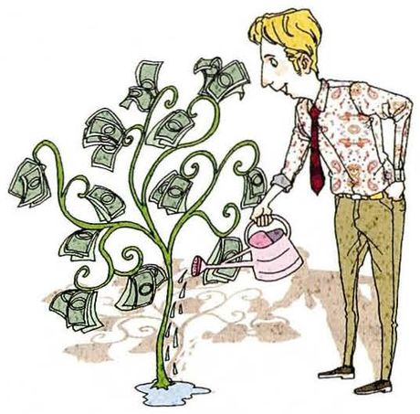
Ask him if he is sure he will get a pay raise next year.
The instructionAsk him if he is sure he will get a pay raise next year.
What to ask about课本脚注：pay raise = 加薪（美式）。if 型，两个从句：只倒装第一个，第二个保持陈述。
Questions you can ask①Are you sure you'll get a pay raise next year? ②Do you think you'll get one? ③What makes you so confident?
24
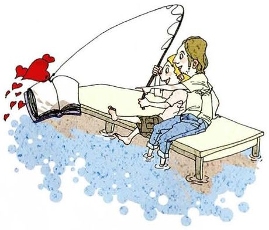
Ask him if he has any ideas to better educate our children.
The instructionAsk him if he has any ideas to better educate our children.
What to ask aboutif 型，he has → do you have。our 不用改 —— 指双方共同的孩子。
Questions you can ask①Do you have any ideas to better educate our children? ②How would you change the way kids are taught? ③What would you do differently?
25
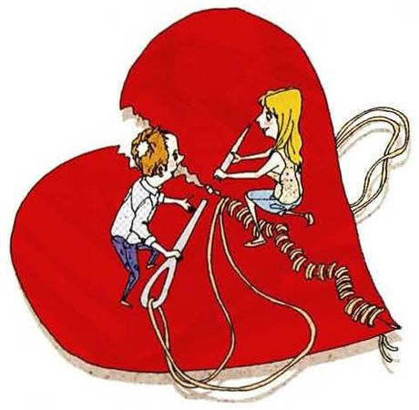
Ask him what he thinks is the best way to curb the rising divorce rate.
The instructionAsk him what he thinks is the best way to curb the rising divorce rate.
What to ask about课本脚注：curb = 控制、抑制。疑问词型，he thinks is → do you think is。is 不倒装也不删。
Questions you can ask①What do you think is the best way to curb the rising divorce rate? ②Why do you think it's rising? ③Do you think anything can be done?
26
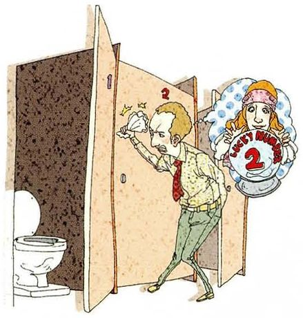
Ask him if he ever believes what a fortune teller says.
The instructionAsk him if he ever believes what a fortune teller says.
What to ask about课本脚注：fortune teller = 算命的人。if 型，he believes → do you ever believe；what … says 不倒装。
Questions you can ask①Do you ever believe what a fortune teller says? ②Have you ever been to one? ③Why do people go, if it isn't true?
27
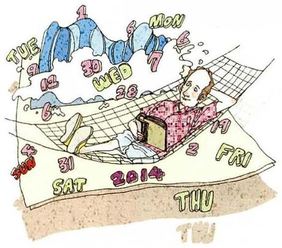
Ask him how many days of paid vacation he gets a year.
The instructionAsk him how many days of paid vacation he gets a year.
What to ask about疑问词型（how many + 可数复数），he gets（三单）→ do you get。
Questions you can ask①How many days of paid vacation do you get a year? ②How many days off do you have? ③Do you actually take them all?
28
Ask him if he ever tried to quit smoking or drinking.
The instructionAsk him if he ever tried to quit smoking or drinking.
What to ask aboutif 型，但有 ever（曾经）→ 用现在完成时更自然：have you ever tried。也可以用 did。
Questions you can ask①Have you ever tried to quit smoking or drinking? ②Did you ever try to stop? ③How did it go?
29
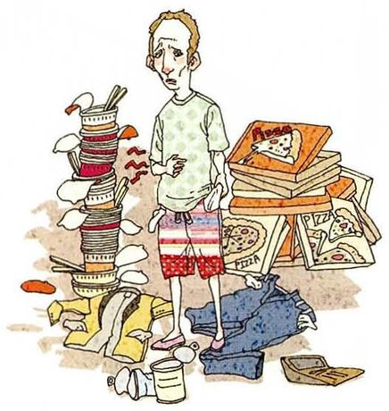
Ask him why it is important to learn how to cook.
The instructionAsk him why it is important to learn how to cook.
What to ask about疑问词型，it is → is it。这题没人称可换，it 是形式主语。
Questions you can ask①Why is it important to learn how to cook? ②Can you cook? ③Who taught you, if anyone?
30
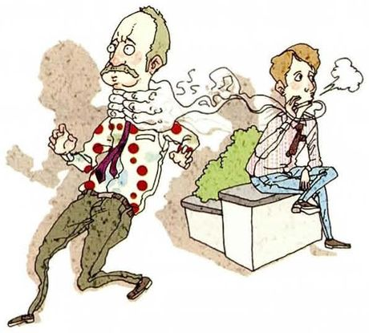
Ask him if he is afraid of secondhand smoke.
The instructionAsk him if he is afraid of secondhand smoke.
What to ask about课本脚注：secondhand smoke = 二手烟。if 型，he is → are you。
Questions you can ask①Are you afraid of secondhand smoke? ②Does it bother you when people smoke near you? ③Do you ever ask them to stop?
05重点词汇（美式音标）
课首页脚注给了 5 个词，全是这一课 30 道题里真正出现的抽象表达。
A · 课本脚注的 5 个词
词
音标
课上怎么用
中文
life insurance
/laɪf ɪnˈʃʊrəns/
buy life insurance 寿险。注意 insurance 的重音在 -SU-
寿险
pay raise
/ˈpeɪ reɪz/
get a pay raise 加薪（美式）。英式说 pay rise
加薪
curb
/kɜːrb/
curb the divorce rate 控制、抑制。比 reduce 有「拉住」的画面
抑制
fortune teller
/ˈfɔːrtʃən ˌtelər/
what a fortune teller says
算命先生
secondhand smoke
/ˌsekəndˈhænd smoʊk/
be afraid of secondhand smoke 二手烟。secondhand 也指二手货
二手烟
B · 指令里的动词与搭配
词
音标
课上怎么用
中文
memorize
/ˈmeməraɪz/
memorize the dictionary 背诵。比 remember 主动
背诵
go along with
/ɡoʊ əˈlɔːŋ wɪð/
go along with me 一起去；也表示「同意」
一起去 / 同意
afford to
/əˈfɔːrd tuː/
can afford to lend me some money 负担得起。通常配 can
负担得起
lend / borrow
/lend/, /ˈbɑːroʊ/
lend me money（借出）/ borrow money from you（借入） 方向相反，最容易混
Which of these questions would you actually ask a stranger? Which ones only a friend?
Of the thirty, maybe six. A stranger gets "Can you ride a motorcycle" or "How did you get injured" — visible things, and even then it depends how the conversation is going. Asking a stranger about their pay raise or their divorce opinion would be strange. The telling one is "Are you tired" — that's something you say to someone you know, because it means you've been watching them.
分类标准是「可见的事实 vs 私人的处境」，而不是简单的熟不熟。最后那句 it means you've been watching them 把一句普通问题讲出了观察力。
Why does English use "ask him if" instead of just the question?
Because the person you're asking isn't the person you're asking about — the instruction has to name them. That's what makes this exercise useful: it separates the two steps that fluent speakers do at once. When I read "ask him if he is tired", I have to notice that "he" means the listener, not a third person. In a real conversation that's automatic, which is exactly why it's hard to practise.
What's the difference between "he asked if" and "he asked that"?
"He asked if" introduces a yes/no question — he wanted to know whether something was true. "He asked that" hardly exists; you'd say "he said that" or "he told me that". The verb decides the shape: ask takes if or a question word, say and tell take that.
说明「动词决定从句的形式」这条规律，比逐条背搭配有效。ask takes if, say and tell take that 是可以直接记住的。
Which person shift is hardest for Chinese speakers?
The ones where "you" becomes "me" — questions 10, 16 and 17. In Chinese the shift is the same, so it should be easy, but in English "you" is right there in the instruction and it's tempting to leave it. So "Can you go along with you" comes out, and it's wrong in a way that's easy to miss because every word is a real word.
it's wrong in a way that's easy to miss because every word is a real word —— 精确说明了这类错误为什么难自查，比说「容易出错」有说服力。
Give me a question you've been wanting to ask someone but haven't.
I'd like to ask my supervisor whether he ever worried that his own PhD was going nowhere. I know it's a strange thing to ask, and I've been putting it off for a year, mostly because I don't want him to think I'm asking about myself. Which, of course, I am.
承认「其实我是想问自己」，把一个问题变成一段自我认识。这类回答在 1v1 课上会让老师记住很久。
How do you ask a personal question politely in English?
Two moves. First, ask permission — "can I ask you something personal?" — which gives them a chance to decline before they've heard it. Second, make it clear why you're asking, because an unexplained personal question always sounds like an assessment. "I'm asking because my own situation is similar" turns it into a conversation instead of an inspection.
an unexplained personal question always sounds like an assessment —— 这个观察解释了为什么同样一句话换个理由就完全不同。
07这节课最容易犯的错
这一课的错误集中在人称没换、语序没倒、以及双从句里多倒了一次。
✗Ask him if he is tired? — 直接念成 He is tired? ✓Are you tired?
两件事都错了：人称没换（he 还是 he），语序没倒（is 还在主语后面）。这是本课最典型的双重错误。
✗Can you go along with you to the department store? ✓Can you go along with me to the department store?
第 10、16、17 题都涉及。指令里的 you 指说话人，问句里必须是 me。
✗What he thinks about Thai food? ✓What do you think about Thai food?
疑问词型必须加助动词并倒装。少了 do，整句变成陈述，不是提问。
✗What do you think is it the best way? ✓What do you think is the best way?
do you think 后面接陈述语序，不能再倒装。第 5、12、25 题都会撞上。
✗Do you remember the day he first met your wife? ✓Do you remember the day you first met your wife?
第 3 题有两个 he，都要换。只换一个是最常见的疏漏。
✗How many days of paid vacation does he get? ✓How many days of paid vacation do you get?
人称换完之后，does 也要跟着变成 do。第 27 题最容易漏这一步。
✗Do you ever believe what does a fortune teller say? ✓Do you ever believe what a fortune teller says?
what 从句内部是陈述语序，不加 does、不倒装。第 19、26 题都是这个结构。
✗Can you lend some money to me? 用来回答第 16 题 ✓Can you afford to lend me some money?
第 16 题的关键词是 afford（负担得起），问的是「你有没有这个能力」，不是单纯借钱。漏掉 afford 就丢了题目的意思。
08五十分钟怎么用
这一课 30 题，全做完不现实。挑有代表性的练，重点是转换速度。
课前 10 分钟：只看第 02 节 B 表的人称转换he→you、his→your、you→me。这三行覆盖本课一半的错误。先练这个，语序反而简单。
挑 10 道题练「五秒内说出来」建议：1、4、6、10、13、16、23、25、27、28。这十题把 if 型、疑问词型、双从句、人称反转全都覆盖了。